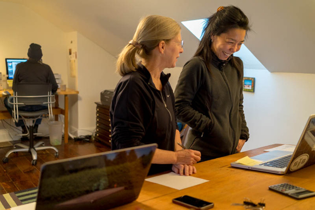

01 — Greeting
Hello. I’m Deb Pang Davis, currently an IMFA candidate and Graduate Research Assistant at the University of Miami in Coral Gables, Florida.

02 — About
For the next two years basecamp is Coral Gables, Florida where I'm learning how to code, apply design thinking, how to prototype, and most of all, synthesize and transfer research into the design of products and services. I spend a lot of time thinking about how to design with people to create meaningful solutions.
03 — Kind Words
Working with Deb was painless and everything came out just as I would have hoped. She has great style, a firm grasp of everything that needed to be included on the site and was helpful in every way. I would happily recommend her to anyone looking to build a new site or fix up their old one.
Luke Bradford, COR Cellars